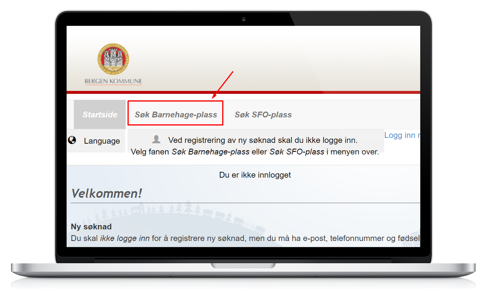
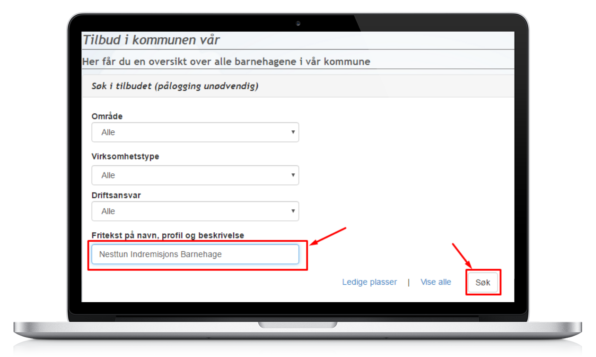
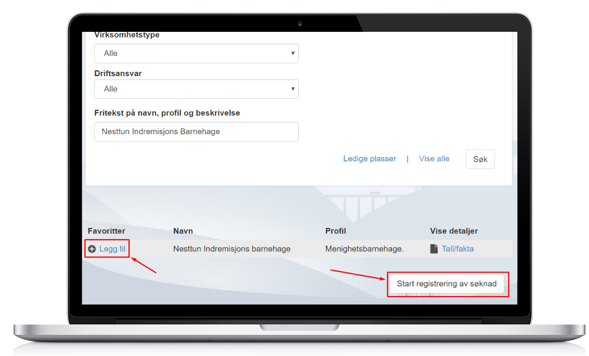

For å søke barnehageplass må du søke via Bergen Kommune sitt nettsted. Her er en kort guide.
Husk å søke før 1. mars!



Ta gjerne kontakt med oss om du har spørsmål om søknadsprosessen eller ønsker å vite mer om barnehagen.
Telefon: 55 10 07 24
E-post: nesttun.barnehage@indrem.no